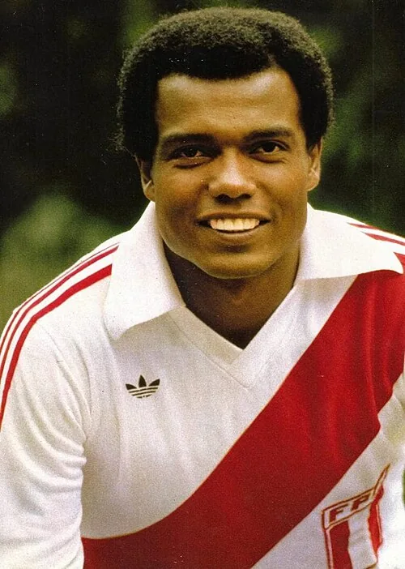

Photo source ↗Unknown author · Public domain
The profile
Teófilo Cubillas
Teófilo Cubillas was a Peruvian attacking midfielder and forward known for his shooting and technique. He played a leading role in Peru’s strong 1970s teams.
Cubillas built his club career with Alianza Lima and also played abroad, including at Porto. His control, shooting and movement from midfield made him a frequent scorer for Peru.
Cubillas scored five goals at the 1970 World Cup as Peru reached the quarter-finals and is listed in retrospective young-player selections for that edition. He added five more World Cup goals in 1978.
1970Mexico
Quarter-finals
Group D Peru3 : 2Bulgaria
- Alberto GALLARDO50′
- Hector CHUMPITAZ55′
- Teofilo CUBILLAS73′
- Dinko DERMENDZHIEV13′
- Hristo BONEV49′
Peruhome
Starting lineup
- Luis RUBINOS
- Eloy CAMPOS
- Orlando DE LA TORRE
- Hector CHUMPITAZ
- Nicolas FUENTES
- Ramon MIFFLIN
- Roberto CHALLE
- Julio BAYLON
- Pedro LEON
- Teofilo CUBILLAS
- Alberto GALLARDO
Substitutions
- 29′Javier GONZALES on · Eloy CAMPOS off
- 51′Hugo SOTIL on · Julio BAYLON off
Bulgariaaway
Starting lineup
- Simeon SIMEONOV
- Aleksandar SHALAMANOV
- Ivan DIMITROV
- Stefan ALADZHOV
- Dimitar PENEV
- Ivan DAVIDOV
- Hristo BONEV
- Dinko DERMENDZHIEV
- Georgi POPOV
- Petar ZHEKOV
- Dimitar YAKIMOV
Substitutions
- 59′Dimitar MARASHLIEV on · Georgi POPOV off
- 73′Georgi ASPARUKHOV on · Hristo BONEV off
Group D Peru3 : 0Morocco
- Teofilo CUBILLAS65′
- Roberto CHALLE67′
- Teofilo CUBILLAS75′
Peruhome
Starting lineup
- Luis RUBINOS
- Orlando DE LA TORRE
- Hector CHUMPITAZ
- Nicolas FUENTES
- Pedro GONZALES
- Ramon MIFFLIN
- Roberto CHALLE
- Pedro LEON
- Teofilo CUBILLAS
- Alberto GALLARDO
- Hugo SOTIL
Substitutions
- 56′Luis CRUZADO on · Ramon MIFFLIN off
- 76′Osvaldo RAMIREZ on · Alberto GALLARDO off
Moroccoaway
Starting lineup
- Allal BEN KASSOU
- Abdallah LAMRANI
- Boujamaa BENKHRIF
- Driss KANOUSSI
- Kassem SLIMANI
- Mohamed MAAROUFI
- Ghandi SAID
- Driss BAMOUS
- Mohamed EL FILALI
- Mahjoub GHAZOUANI
- Houmane JARIR
Substitutions
- 66′Jilali FADILI on · Boujamaa BENKHRIF off
- 81′Ahmed ALAOUI on · Ghandi SAID off
Group D West Germany3 : 1Peru
- Gerd MUELLER19′
- Gerd MUELLER26′
- Gerd MUELLER39′
- Teofilo CUBILLAS44′
West Germanyhome
Starting lineup
- Sepp MAIER
- Horst-Dieter HOETTGES
- Karl-Heinz SCHNELLINGER
- Franz BECKENBAUER
- Berti VOGTS
- Klaus FICHTEL
- Wolfgang OVERATH
- Uwe SEELER
- Gerd MUELLER
- Stan LIBUDA
- Hennes LOEHR
Substitutions
- 45+1′Bernd PATZKE on · Horst-Dieter HOETTGES off
- 75′Juergen GRABOWSKI on · Stan LIBUDA off
Peruaway
Starting lineup
- Luis RUBINOS
- Orlando DE LA TORRE
- Hector CHUMPITAZ
- Nicolas FUENTES
- Pedro GONZALES
- Ramon MIFFLIN
- Roberto CHALLE
- Pedro LEON
- Teofilo CUBILLAS
- Alberto GALLARDO
- Hugo SOTIL
Substitutions
- 56′Osvaldo RAMIREZ on · Pedro LEON off
- 72′Luis CRUZADO on · Roberto CHALLE off
Quarter-final Brazil4 : 2Peru
- RIVELLINO11′
- TOSTAO15′
- TOSTAO52′
- JAIRZINHO75′
- Alberto GALLARDO28′
- Teofilo CUBILLAS70′
Brazilhome
Starting lineup
- FELIX
- BRITO
- WILSON PIAZZA
- CARLOS ALBERTO
- MARCO ANTONIO
- CLODOALDO
- GERSON
- TOSTAO
- RIVELLINO
- JAIRZINHO
- PELE
Substitutions
- 67′PAULO CESAR on · GERSON off
- 80′ROBERTO on · JAIRZINHO off
Peruaway
Starting lineup
- Luis RUBINOS
- Eloy CAMPOS
- Hector CHUMPITAZ
- Nicolas FUENTES
- Jose FERNANDEZ
- Ramon MIFFLIN
- Roberto CHALLE
- Julio BAYLON
- Pedro LEON
- Teofilo CUBILLAS
- Alberto GALLARDO
Substitutions
- 54′Hugo SOTIL on · Julio BAYLON off
- 61′Eladio REYES on · Pedro LEON off
1978Argentina
Second round
Group D Peru3 : 1Scotland
- Cesar CUETO43′
- Teofilo CUBILLAS71′
- Teofilo CUBILLAS77′
- Joe JORDAN14′
Peruhome
Starting lineup
- Ramon QUIROGA
- Jaime DUARTE
- Rodolfo MANZO
- Hector CHUMPITAZ
- Ruben DIAZ
- Jose VELASQUEZ
- Cesar CUETO
- Juan MUNANTE
- Teofilo CUBILLAS
- Juan Carlos OBLITAS
- Guillermo LA ROSA
Substitutions
- 62′Hugo SOTIL on · Guillermo LA ROSA off
- 82′Percy ROJAS on · Cesar CUETO off
Scotlandaway
Starting lineup
- Alan ROUGH
- Martin BUCHAN
- Stuart KENNEDY
- Tom FORSYTH
- Kenny BURNS
- Bruce RIOCH
- Don MASSON
- Asa HARTFORD
- Kenny DALGLISH
- Joe JORDAN
- Willie JOHNSTON
Substitutions
- 75′Lou MACARI on · Don MASSON off
- 75′Archie GEMMILL on · Bruce RIOCH off
Group D Netherlands0 : 0Peru
Netherlandshome
Starting lineup
- Jan JONGBLOED
- Jan POORTVLIET
- Ruud KROL
- Wim RIJSBERGEN
- Wim SUURBIER
- Wim JANSEN
- Arie HAAN
- Willy VAN DE KERKHOF
- Johan NEESKENS
- Rene VAN DE KERKHOF
- Rob RENSENBRINK
Substitutions
- 68′Dick NANNINGA on · Johan NEESKENS off
Peruaway
Starting lineup
- Ramon QUIROGA
- Jaime DUARTE
- Rodolfo MANZO
- Hector CHUMPITAZ
- Ruben DIAZ
- Jose VELASQUEZ
- Cesar CUETO
- Juan MUNANTE
- Teofilo CUBILLAS
- Juan Carlos OBLITAS
- Guillermo LA ROSA
Substitutions
- 62′Hugo SOTIL on · Guillermo LA ROSA off
Group D Peru4 : 1Iran
- Jose VELASQUEZ2′
- Teofilo CUBILLAS36′ · pen.
- Teofilo CUBILLAS39′ · pen.
- Teofilo CUBILLAS79′
- Hassan ROWSHAN41′
Peruhome
Starting lineup
- Ramon QUIROGA
- Jaime DUARTE
- Rodolfo MANZO
- Hector CHUMPITAZ
- Ruben DIAZ
- Jose VELASQUEZ
- Cesar CUETO
- Juan MUNANTE
- Teofilo CUBILLAS
- Juan Carlos OBLITAS
- Guillermo LA ROSA
Substitutions
- 60′Hugo SOTIL on · Guillermo LA ROSA off
- 67′German LEGUIA on · Rodolfo MANZO off
Iranaway
Starting lineup
- Nasser HEJAZI
- Jawad ALLAHWARDI
- Hassan NAZARI
- Hussein KAZERANI
- Iraj DANAEIFARD
- Ali PARWIN
- Ebrahim KASSEMPOOR
- Mohammad SADEQI
- Hassan ROWSHAN
- Hussein FARAKI
- Nasrollah ABDOLLAHI
Substitutions
- 51′Ghafoor JAHANI on · Hussein FARAKI off
- 66′Behtash FARIBA on · Hassan ROWSHAN off
Second-phase Group 2 Brazil3 : 0Peru
- DIRCEU15′
- DIRCEU28′
- ZICO73′ · pen.
Brazilhome
Starting lineup
- LEAO
- TONINHO
- OSCAR
- AMARAL
- RODRIGUES NETO
- TONINHO CEREZO
- DIRCEU
- BATISTA
- GIL
- JORGE MENDONCA
- ROBERTO DINAMITE
Substitutions
- 70′ZICO on · GIL off
- 76′CHICAO on · TONINHO off
Peruaway
Starting lineup
- Ramon QUIROGA
- Jaime DUARTE
- Rodolfo MANZO
- Hector CHUMPITAZ
- Ruben DIAZ
- Jose VELASQUEZ
- Cesar CUETO
- Juan MUNANTE
- Teofilo CUBILLAS
- Juan Carlos OBLITAS
- Guillermo LA ROSA
Substitutions
- 11′Jose NAVARRO on · Ruben DIAZ off
- 45+1′Percy ROJAS on · Juan Carlos OBLITAS off
Second-phase Group 2 Poland1 : 0Peru
- Andrzej SZARMACH65′
Polandhome
Starting lineup
- Zygmunt KUKLA
- Henryk MACULEWICZ
- Antoni SZYMANOWSKI
- Jerzy GORGON
- Wladyslaw ZMUDA
- Adam NAWALKA
- Bohdan MASZTALER
- Kazimierz DEYNA
- Grzegorz LATO
- Andrzej SZARMACH
- Zbigniew BONIEK
Substitutions
- 45+1′Henryk KASPERCZAK on · Bohdan MASZTALER off
- 86′Wlodzimierz LUBANSKI on · Zbigniew BONIEK off
Peruaway
Starting lineup
- Ramon QUIROGA
- Jaime DUARTE
- Rodolfo MANZO
- Hector CHUMPITAZ
- Jose NAVARRO
- Cesar CUETO
- Alfredo QUESADA
- Juan MUNANTE
- Teofilo CUBILLAS
- Juan Carlos OBLITAS
- Guillermo LA ROSA
Substitutions
- 45+1′Percy ROJAS on · Juan MUNANTE off
- 74′Hugo SOTIL on · Guillermo LA ROSA off
Second-phase Group 2 Argentina6 : 0Peru
- Mario KEMPES21′
- Alberto TARANTINI43′
- Mario KEMPES48′
- Leopoldo LUQUE50′
- Rene HOUSEMAN67′
- Leopoldo LUQUE72′
Argentinahome
Starting lineup
- Ubaldo FILLOL
- Luis GALVAN
- Jorge OLGUIN
- Daniel PASSARELLA
- Alberto TARANTINI
- Americo GALLEGO
- Omar LARROSA
- Daniel BERTONI
- Mario KEMPES
- Leopoldo LUQUE
- Oscar ORTIZ
Substitutions
- 64′Rene HOUSEMAN on · Daniel BERTONI off
- 85′Miguel OVIEDO on · Americo GALLEGO off
Peruaway
Starting lineup
- Ramon QUIROGA
- Jaime DUARTE
- Rodolfo MANZO
- Hector CHUMPITAZ
- Roberto ROJAS
- Jose VELASQUEZ
- Cesar CUETO
- Alfredo QUESADA
- Juan MUNANTE
- Teofilo CUBILLAS
- Juan Carlos OBLITAS
Substitutions
- 51′Raul GORRITI on · Jose VELASQUEZ off
1982Spain
Group stage
Group A Peru0 : 0Cameroon
Peruhome
Starting lineup
- Ramon QUIROGA
- Jaime DUARTE
- Rafael SALGUERO
- Ruben DIAZ
- Jorge OLAECHEA
- Jose VELASQUEZ
- Cesar CUETO
- Julio Cesar URIBE
- Teofilo CUBILLAS
- German LEGUIA
- Juan Carlos OBLITAS
Substitutions
- 57′Geronimo BARBADILLO on · German LEGUIA off
- 57′Guillermo LA ROSA on · Teofilo CUBILLAS off
Cameroonaway
Starting lineup
- Thomas NKONO
- Michel KAHAM
- Rene NDJEYA
- Jean ONANA
- Emmanuel KUNDE
- Ephrem MBOM
- Ibrahim AOUDOU
- Gregoire MBIDA
- Theophile ABEGA
- Roger MILLA
- Jacques NGUEA
Substitutions
- 73′Paul BAHOKEN on · Jacques NGUEA off
- 89′Jean Pierre TOKOTO on · Roger MILLA off
Group A Italy1 : 1Peru
- Bruno CONTI18′
- Ruben DIAZ83′
Italyhome
Starting lineup
- Dino ZOFF
- Antonio CABRINI
- Fulvio COLLOVATI
- Claudio GENTILE
- Gaetano SCIREA
- Giancarlo ANTOGNONI
- Giampiero MARINI
- Marco TARDELLI
- Bruno CONTI
- Francesco GRAZIANI
- Paolo ROSSI
Substitutions
- 45+1′Franco CAUSIO on · Paolo ROSSI off
Peruaway
Starting lineup
- Ramon QUIROGA
- Jaime DUARTE
- Rafael SALGUERO
- Ruben DIAZ
- Jorge OLAECHEA
- Jose VELASQUEZ
- Cesar CUETO
- Julio Cesar URIBE
- Teofilo CUBILLAS
- Geronimo BARBADILLO
- Juan Carlos OBLITAS
Substitutions
- 65′German LEGUIA on · Geronimo BARBADILLO off
- 65′Guillermo LA ROSA on · Julio Cesar URIBE off
Group A Poland5 : 1Peru
- Wlodimierz SMOLAREK55′
- Grzegorz LATO58′
- Zbigniew BONIEK61′
- Andrzej BUNCOL68′
- Wlodzimierz CIOLEK76′
- Guillermo LA ROSA83′
Polandhome
Starting lineup
- Jozef MLYNARCZYK
- Janusz KUPCEWICZ
- Pawel JANAS
- Jan JALOCHA
- Wladyslaw ZMUDA
- Stefan MAJEWSKI
- Waldemar MATYSIK
- Andrzej BUNCOL
- Wlodimierz SMOLAREK
- Grzegorz LATO
- Zbigniew BONIEK
Substitutions
- 26′Marek DZIUBA on · Jan JALOCHA off
- 74′Wlodzimierz CIOLEK on · Wlodimierz SMOLAREK off
Peruaway
Starting lineup
- Ramon QUIROGA
- Jaime DUARTE
- Rafael SALGUERO
- Ruben DIAZ
- Jorge OLAECHEA
- Jose VELASQUEZ
- Cesar CUETO
- Teofilo CUBILLAS
- German LEGUIA
- Juan Carlos OBLITAS
- Guillermo LA ROSA
Substitutions
- 50′Geronimo BARBADILLO on · Juan Carlos OBLITAS off
- 50′Julio Cesar URIBE on · Teofilo CUBILLAS off